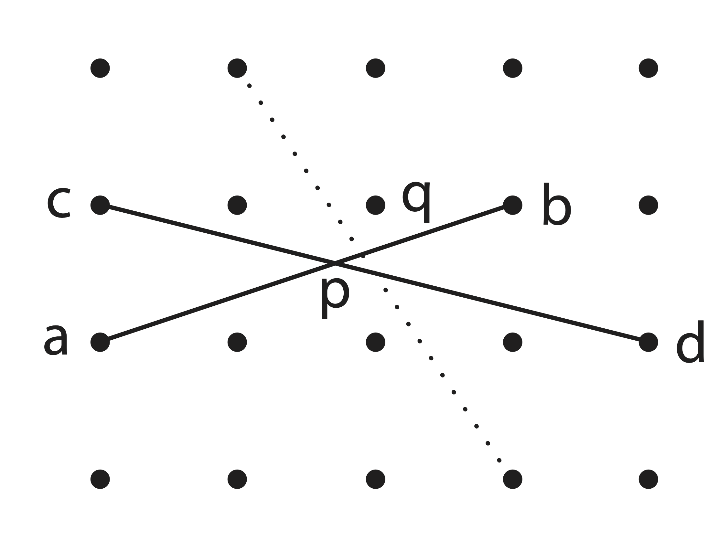
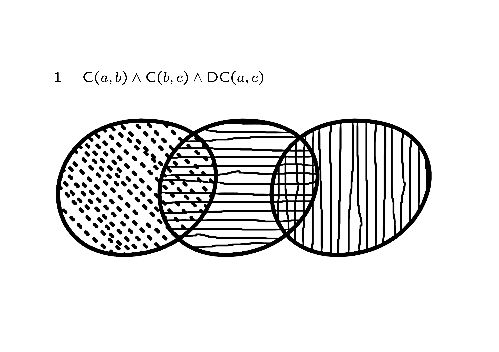
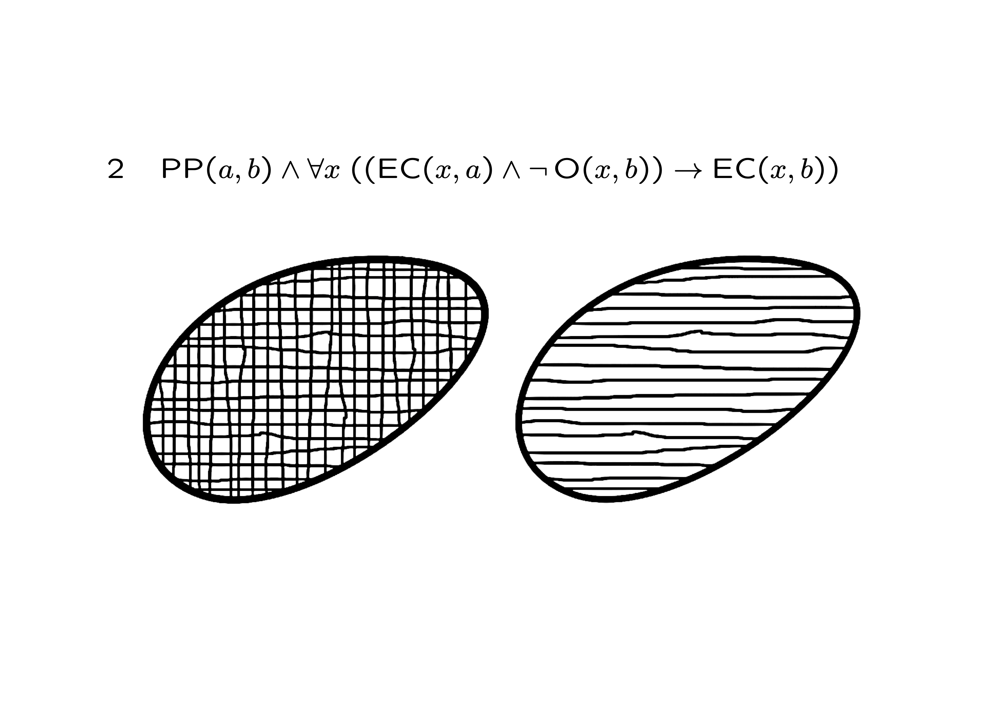
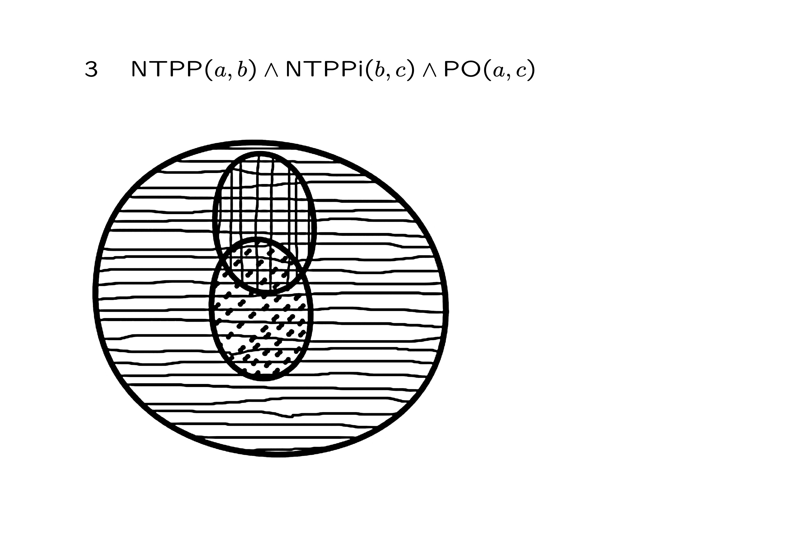
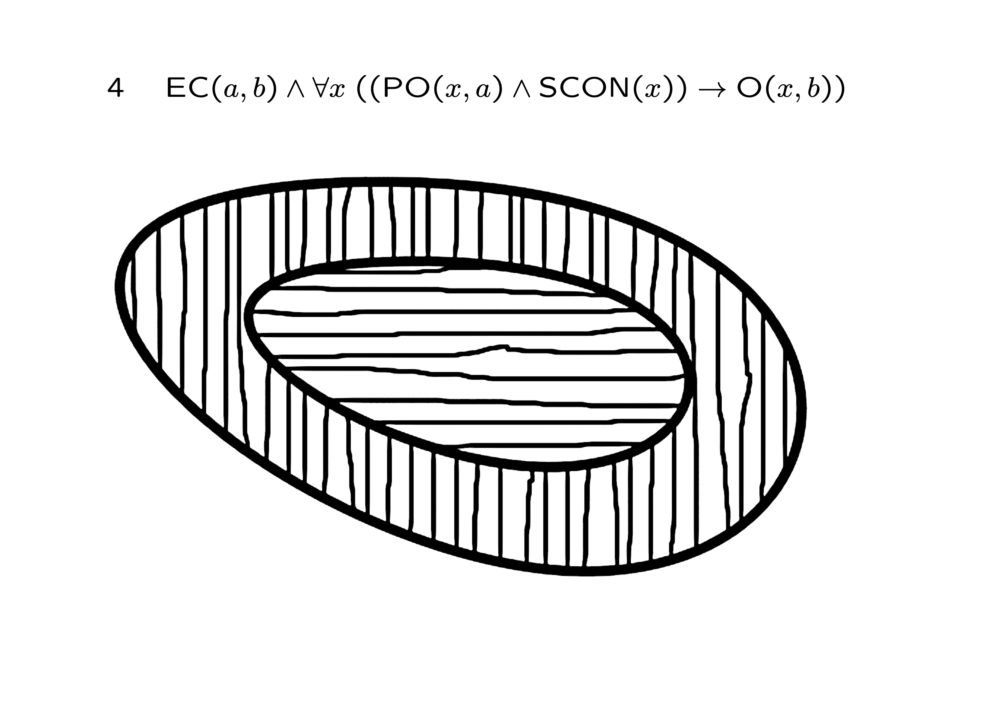
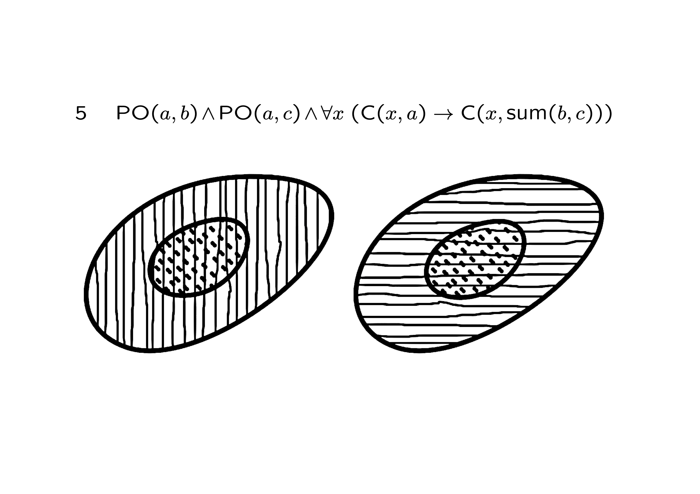
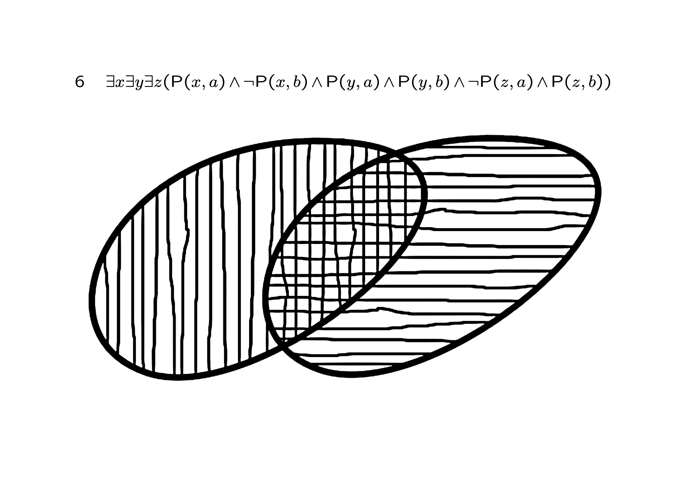
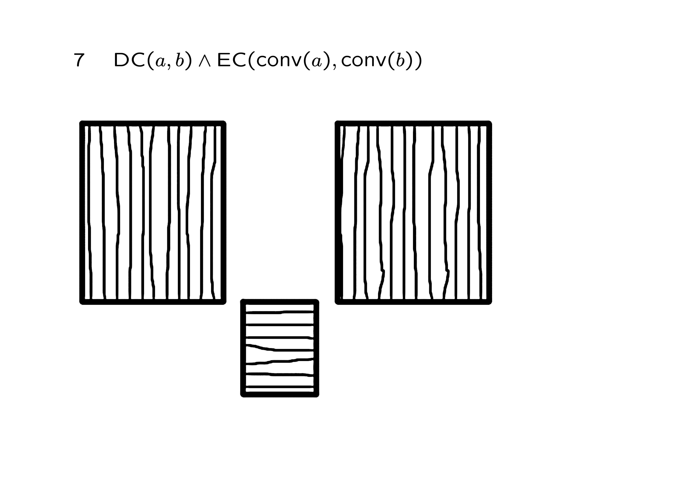
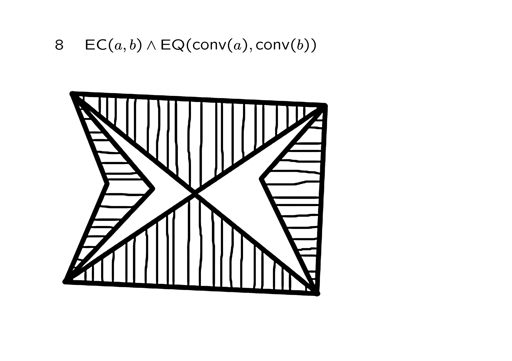

Representing knowledge about space
\(\def\R{\mathbb{R}}\) \(\def\C{\mathop{\mathsf{C}}} \def\DC{\mathop{\mathsf{DC}}} \def\DR{\mathop{\mathsf{DR}}} \def\P{\mathop{\mathsf{P}}} \def\PP{\mathop{\mathsf{PP}}} \def\PPi{\mathop{\mathsf{PPi}}} \def\ONE{\mathop{\mathsf{ONE}}} \def\EC{\mathop{\mathsf{EC}}} \def\TPP{\mathop{\mathsf{TPP}}} \def\NTPP{\mathop{\mathsf{NTPP}}} \def\C{\mathop{\mathsf{C}}} \def\TPPi{\mathop{\mathsf{TPPi}}} \def\NTPPi{\mathop{\mathsf{NTPPi}}} \def\sum{\mathop{\mathsf{sum}}} \def\prod{\mathop{\mathsf{prod}}} \def\INT{\mathop{\mathsf{INT}}} \def\O{\mathop{\mathsf{O}}} \def\compl{\mathop{\mathsf{compl}}} \def\SCON{\mathop{\mathsf{SCON}}} \def\conv{\mathop{\mathsf{conv}}}\) \(\def\phi{\varphi}\) \(\def\univ{\mathsf{u}} \def\null{\mathsf{null}}\) \(\def\A{\forall} \def\E{\exists} \def\R{\mathbb{R}}\)
Learning outcomes:
After completing this lesson you should be able to:
-
Explain the distinction between space as represented in coordinate geometry, and space as represented by qualitative descriptions.
-
Draw examples of regions that satisfy constraints using the RCC8 relations.
-
Explain what is meant by a set of JEPD relations.
-
Identify which RCC8 relation holds between regions in a given example.
1.1 Introduction
This lesson is about representing knowledge about space. In the context of this module space is used in a very general sense including examples, such as:
- the arrangement of objects in a room (space in a room)
- the route from one city to another (geographical space)
- the distance between two words on a page (space on a page).
We do not exclude astronomical space, but we are not using the word in the same way that it is used when people talk about space travel for example.
In this lesson we will see some of the ways in which space can be represented (avoiding philosophical questions such as What is space?).
One way to think of space is as built out of points, alternatively we can take regions as primitive.
Region-based theories of space have been one feature of research at Leeds for several years. This lesson introduces this work which is often qualitative and also relates to thinking about time as intervals rather than instants.
Spatial knowledge is very widely used. For example:
-
Navigation – how to get from here to there
-
Navigation can be in the real world or virtual world (e.g. games)
-
Geographical information (e.g. monitoring land use, climate, traffic, etc.)
-
Surveillance / security (tracking location, contacts, etc.)
-
Manufacture (e.g. of buildings, of smaller items, by robots etc.)
-
Medicine (e.g. position of organs, of tumours/ etc.)
-
Spatial analogy e.g. cyberspace.
1.2 Ways of representing space
1.2.1 Coordinate geometry
We are familiar with representing position in two-dimensional space by a pair of numbers (usually called the \(x\) and \(y\) coordinates). (Also three co-ordinates for 3D space etc.)
This might be a position on a screen (e.g. in graphics) or position on the ground (e.g. in building construction).
We think of a line or a region as being a set of points, and a point is simply a pair of real numbers.
Computationally we cannot represent arbitrary sets of points explicitly. They can be infinite for one thing. But we can represent a line by its end points and a polygon by its vertices. Co-ordinate geometry is practically very useful, but there are some drawbacks.
The mathematical ideal of \(\R^2\) is not what we compute with. It assumes we can measure location exactly. This is physically dubious. Note the difference between these two statements:
- Fred is exactly 1.87m tall.
- Fred is more than 1.80m tall.
If the second statement is true, it can be demonstrated by showing that the height is at least some quantity greater than 1.80m. For example, measuring the height with an accuracy of \(\pm 0.01\)m, and getting a value of 1.82m. But there is no way to show the first statement when 'exact' really means with no margin of error at all.
It is possible to compute with approximations, but it is not easy and it does not actually give something that is the same as \(\R^2\). If we can only represent points to some finite precision, we soon run into complications. This is demonstrated in the following example where only the points shown as black dots can be represented, but we still want to talk about lines joining these points.

Select for full text description of diagram.
This diagram consists of 20 blacks dots equally spaced in four rows of five.
The second dot on the first row is connected to the fourth dot on the bottom row by a dotted line.
The first dot on the second row labelled c is connected to the fifth dot on the third row labelled d with a solid line.
The first dot on the third row labelled a is connected to the fourth dot on the second row labelled b with a solid line.
The point at which they intersect is labelled p. The third dot on the second row is labelled q, representing the point at which lines ab and cd intersect after rounding.
Lines \(\mathsf{ab}\) and \(\mathsf{cd}\) 'really' intersect at \(\mathsf{p}\), but this is rounded to \(\mathsf{q}\). Consider this question:
- Does the intersection of \(\mathsf{ab}\) and \(\mathsf{cd}\) lie on the opposite side of the dotted line from the point \(\mathsf{q}\)?
If we can only talk about the approximated points, a great deal of work is needed to achieve an approximation that fits the geometry of lines and other features in a workable way.
1.2.2 Euclid's geometry
To understand the features of region-based spatial representation, we need to understand how the \(R^2\) (coordinate-based) model differs from some others.
In geometry as understood by Euclid, there were points, lines and figures (e.g. triangles and circles) but a line or a triangle was not made from points.
Also this kind of geometry did not come with a built-in notion of scale, or a special origin. It makes no sense to say 'how long is this line' – you can only compare one distance with another.
So, \(R^2\) is a representation of Euclid's geometry which makes a choice of origin and scale and direction of the axes.
1.2.3 Topology
For many practical problems we don't actually need information about distances or angles. The London Underground map is a good example of the use of spatial information which is topologically correct but geometrically incorrect.
Topology in the plane is sometimes called 'rubber sheet geometry' because it considers those statements that remain true even when space is stretched or compressed but without cutting or fusing distinct points.
For example, all the plane figures in the image below are topologically the same. To explain what that means, start by imagining them to be as malleable as you like. Imagine they can be stretched out, squashed, distorted as much as you like, as long as there is no tearing, cutting or collapsing an area down to a single point. In that scenario you would be able to transform any one shape into any other shape.
From the topological viewpoint there is no fundamental difference between them.

While we often need information at the topological level in knowledge representation, the classical mathematical framework was not designed for computation and has features which don't relate to everyday spatial experience.
The definition of a Topological Space is a set \(X\) (of things we think of as points) and a set of subsets of \(X\), called open sets, which satisfy certain axioms. In the context of plane or 3D space, the usual topology would consider a disc, or a circular region, as an open set if the boundary was not included. But it would be a closed set if the boundary is included. The distinction between open sets and closed sets is hardly physically significant: e.g. all the points less than 1m from some point compared with all the points at most 1m from the same point.
The distinction between open sets and closed sets is a feature of a well-known and mathematically common way of thinking about space. However, it is hard to see how the distinction between these two things corresponds to any feature of everyday experience for humans.
1.3 Regions, points and connection
The idea that space can be made out of points has long been controversial. This is shown in the following quotes which are taken from J. L. Bell A primer of infinitesimal analysis (1998) pp. 1-2.
Quotes from A primer of infinitesimal analysis (1998)
"no continuum can be made up out of indivisibles, granting that the line is continuous and the point indivisible" [Aristotle]
"A point may not be considered part of a line" [Leibniz]
"Space and time are quanta continua … points and instants mere positions … and out of mere positions … neither space nor time can be constructed" [Kant]
"Exact time- or space-points are not the ultimate, underlying, atomic elements of the duration or extension given to us in experience" [Weyl]
"… a true continuum has no points" [René Thom]
The most basic ideas of topology used today evolved mainly from about the 1890s to the 1920s. However, in the 1920s there were also proposals for a theory of space based on regions and not on points.
Whitehead and de Laguna advanced region-based accounts of space in which a relation of connection between regions played an important role. Informally regions are connected if they overlap or if solids occupying them would be in contact.
Whitehead's ideas were later developed by Clarke and this led to the Region-Connection Calculus (RCC) of Randell, Cui and Cohn. This is formalised in first order logic.
To get the basic idea, we think, to start with, of regions as being two-dimensional portions of a surface that we can draw pictures of by drawing a boundary around the region. We then think of regions being connected if they touch or overlap, as in the following image.
Select for full text description of diagram.
This diagram consists of two pairs of the same two shapes. The shapes have solid outlines and define regions. One is a squashed circular shape and the other is also round but shaped more like the letter S. On the left-hand side these shapes are touching. On the right-hand side they overlap.
This is only an informal picture. The actual formal properties of regions are defined in logic below. The picture can be misleading because there is nothing to stop a region having holes in it, or being made up of many separate parts. The logical axioms do not force regions to be bounded – they might be of infinite extent if they are regions in the plane.
Connection is a binary relation, written \(C(x,y)\).
Several other spatial concepts are definable in terms of connection. You should draw the associated diagrams for all of these. Note that these are all definitions; they are not results. They show how the basic notion of connection can be used to talk about these other concepts.
1.3.1 Part
The relationship of being a part:
The notation \(\equiv\) is used to mean 'is defined as'.
If we wrote out the definition in full in first order logic it would be:
If you draw regions as simple boundaries, the idea of one being a part of another is that the part is somewhere inside the whole. Being a part includes the possibility that regions are equal. That is, a region is a part of itself.
Note how the definition works. If you draw one region inside another, then you cannot draw a region \(z\) which is connected to the inner one without \(z\) being connected to the outer one.
1.3.2 Proper part
The relationship of being a proper part:
Intuitively this is the special case of being a part but not being equal. However, the expression above does not need a logic with equality and this is how it was expressed in the 1992 version of the RCC.
1.3.3 Overlap
The relationship of regions overlapping
Overlapping is defined as sharing a region. Note that regions that only just touch are not overlapping.
1.3.4 External connection
The relationship of regions being externally connected:
This is the idea of just touching at the boundary and not overlapping.
1.3.5 Tangential proper part
The relationship of being a tangential proper part:
This is a special kind of proper part relationship. This is the idea of the part being inside the whole but the part does touch the boundary of the whole from the inside.
1.3.6 Non-tangential proper part
The relationship of being a non-tangential proper part:
This is a special kind of proper part relationship. This is the idea of the part being so clearly inside the whole that the part does not touch the boundary of the whole.
1.3.7 A useful online tool
You can explore the RCC further using this online app
1.4 Axioms for connection
What properties should we insist connection has if it is to model the way we expect regions of space to behave? The axioms for the RCC can be found in the 1992 paper by Randell, Cui and Cohn, which is available from this page at Leeds. There are different possibilities for how these are presented and here we will use an equivalent formulation from J. G. Stell, Boolean Connection Algebras (2000).
The way the axioms are set out below differs from some of the first order logic we have seen so far. So first let's explain the notation.
-
When there is a unary predicate symbol, \(P\), in our logic, we have seen we can write \(\forall x \; (P(x) \to \phi)\) where \(\phi\) is a formula involving \(x\). An alternative is to name all the elements of the domain, \(D\), that satisfy \(P\) as a set \(A\) where \(A = \{x \in D \mid P(x)\}\). Then instead of \(\forall x \; (P(x) \to \phi)\) we can write \(\forall x \in A\; \phi\).
-
When several variables are quantified in the same way they can be grouped together. That is instead of \(\forall x \forall y \forall z \ldots\) we can just write \(\forall x, y, z \ldots\).
-
Function symbols are used which are to be interpreted by functions that may only be defined on part of the domain and which take values in a specified part of the domain. Suppose we want a model with a function \(f: A \to B\) where \(A\) and \(B\) are subsets of the domain defined by unary predicates \(a\) and \(b\). Then using the machinery we have already seen, we can have a predicate \(P\) where \(P(x,y)\) means applying \(f\) to \(x\) gives \(y,\) or \(y = f(x)\). We would need to state:
\[ \begin{array}{l} \forall x \in A\; \exists y \in B\; P(x,y),\\ \forall x \in A\; \forall y, z \in B\; ((P(x,y) \wedge P(x,z)) \to y = z). \end{array} \]In addition, having the function symbol \(f\) means we can write expressions like:
\[ \forall x \in A\; \ldots f(x) \ldots \]Instead of having to say:
\[ \forall x \in A\; \exists y\; P(x,y) \to \ldots y \ldots \]
The idea behind the formal axioms is that a model of the RCC axioms consists of:
- a set, \(R\), the elements of which are the regions
- a special region \(\univ\) for the universe, or the whole space
- an element, which is not a region, called \(\null\) for a null element
- an operation \(\compl\) (complement) which gives for each region (except \(\univ\)) the outside of the region.
- an operation, \(\sum\), giving the union of a pair of regions
- an operation, \(\prod\), on regions giving their intersection (when it exists), or giving the null element when the regions do not overlap
- the binary relation of connection, \(C\).
In more formal language:
- A model of the region-connection calculus consists of a set \(R\), an element \(\univ \in R\), a singleton set \(\{\null\}\) disjoint from \(R\), a unary operation \(\compl : R - \{\univ\} \rightarrow R - \{\univ\}\), binary operations \(\sum : R \times R \rightarrow R\), and \(\prod : R \times R \rightarrow R \cup \{\null\}\), and a binary relation \(C\) on \(R\).
These data are required to satisfy the following axioms, which make use of the relations derived from \(C\) defined earlier. I have added an informal expression of the idea behind each axiom below it.
Axiom R7 was later found to be redundant. This means it can be proved from the other ones.
1.5 The RCC8 relations
Given certain properties of the connection relation, it can be shown that there are eight relationships having the special property that every pair of regions will be in exactly one of these relationships. The eight relationships are said to form a Jointly Exhaustive and Pairwise Disjoint set, or a JEPD set. This means that these eight together exhaust all the possibilities for any pair of regions and no two different ones of them can hold for any pair of regions.
These eight relations are called the RCC8 relations. In the following diagrams they are shown by two regions:
- one indicated by a thicker dashed line, and
- the other by a thinner solid line.
The two regions will be called \(\mathit{dashed}\) and \(\mathit{solid}\) respectively in the explanation. In each case the relationship is discussed in the sense of the relationship of the dashed region to the solid one in that order.
The use of dashed and solid lines is simply to distinguish two regions, which are not assumed here to have any properties other than simply being regions. You may see diagrams elsewhere in which a solid line indicates a portion of space including the boundary (a closed region in the topological sense). In that case a dashed line can be used to indicate an open region (one where the boundary is not included). Just to be clear that this is not the intention here.
Four of the relations involve one region being a proper part of the other as in these four images.
Select for full text description of diagram.
This diagram consists of four relationships between two shapes. The shapes have either a dashed or solid outline.
In the first case a round region with a dashed outline is enclosed within a larger round region with a solid outline. The smaller region is touching the larger region’s border on its lower left-hand side.
In the second case a round region with a dashed outline is enclosed within a larger round region with a solid outline and is not touching its borders.
In the third case a round region with a solid outline is enclosed within a larger round region with a dashed outline and is not touching its borders.
In the fourth case a round region with a solid outline is enclosed within a larger round region with a dashed outline. The smaller region is touching the larger region’s borders on its lower left-hand side.
From left to right the four cases shown above are:
-
Tangential Proper Part: \(TPP (\mathit{dashed}, \mathit{solid})\)
-
Non-Tangential Proper Part: \(NTPP(\mathit{dashed}, \mathit{solid})\)
-
Non-Tangential Proper Part Inverse: \(NTPPi(\mathit{dashed}, \mathit{solid})\)
-
Tangential Proper Part Inverse: \(TPPi(\mathit{dashed}, \mathit{solid})\)
These four relations come in pairs where one relation is the converse of the other:
The other four of the RCC8 relations are shown in the next four diagrams.
Select for full text description of diagram.
This diagram consists of four relationships between two shapes. These have either a dashed or solid outline.
In the first case a round region with a solid outline is overlapped on its right-hand border by a round region with a dashed outline.
In the second case a round region with a solid outline exactly overlaps with a round region with a dashed outline
In the third case a round region with a solid outline is touching the border of a round region with a dashed outline.
In the fourth case a round region with a solid outline is next to a round region with a dashed outline but there is a gap between them.
From left to right the four cases shown above are:
-
Partial Overlap: \(PO(\mathit{dashed}, \mathit{solid})\)
-
Equal: \(EQ(\mathit{dashed}, \mathit{solid})\)
-
Externally Connected: \(EC(\mathit{dashed}, \mathit{solid})\)
-
Disconnected: \(DC(\mathit{dashed}, \mathit{solid})\)
These four relations are symmetric; each one is its own converse.
1.5.1 Other JEPD sets
There are other sets of relations having the JEPD property. The RCC5 is obtained by ignoring distinctions that depend on boundaries of regions. That is, \(DC\) and \(EC\) are indistinguishable and either is just the relation discrete from, \(DR\):
The other RCC5 relations are: \(EQ\), \(PO\), \(PP\), and \(PPi\) where \(PPi\) is the converse (or inverse) of \(PP\).
Further collapsing of the relations produces RCC3. There are just three relations:
- Discrete, \(DR\), just as in RCC5
- Equal, \(EQ\), just as in RCC5
- Overlapping but not equal, \(ONE\), when the relationship is any one of \(PO\), \(PP\), or \(PPi\).
1.6 Self-connectedness
We can define the idea of a region being 'one-piece' or 'self-connected'. Sometimes this is just called 'connected', but don't confuse it with the binary relation \(C\).
An exercise using the self-connected property
Draw regions \(a\) and \(b\) for which
\(\qquad SCON(a) \wedge \neg SCON(b) \wedge SCON(\sum(a,b))\)
Note
The answer shown is just one possible answer. Other correct answers might look nothing like this.
Reveal answer
1.7 Convexity
One proposed extension to the RCC theory is a function \(conv\) giving the convex hull of a region.
In geometry, the CONVEX HULL of \(x\) is the smallest region, \(y\), including \(x\) and such that any line between points in \(y\) lies entirely in \(y\). That is, the smallest CONVEX region including \(x\).
The following two images show a region on the left together with its convex hull on the right.
In the RCC approach this additional operator allows more expressive descriptions, but the convex hull cannot be defined just using connection as it is not a topological concept. It is possible to state some features of it easily but these do not constrain it enough by themselves.
For example:
- \(\forall x\; conv(conv(x)) = conv(x)\)
- \(\forall x\; P(x, conv(x))\)
but these two properties are satisfied when \(conv(x)\) is just \(x\) itself. This illustrates a key point that sometimes confuses people when learning about KRR to start with:
-
the aim in representing something in logic
- is not simply to write down statements that are true about the thing to be modelled,
-
it is to find statements that, when taken altogether, are
- true about what you are modelling
- and also false about what you are not modelling.
It is rather like writing more and more statements is putting up more and more fences. You want the fences to include things you are modelling and to exclude the things you are not.
An exercise using the convex hull operator
Draw regions \(a\), \(b\) and \(c\) for which
\(\qquad NTPP(a, conv(b)) \wedge PO(c, conv(b)) \wedge DC(a,b) \wedge NTPP(a,c)\)
Note
The answer shown is just one possible answer. Other correct answers might look nothing like this.
Reveal answer
Select for full text description of diagram.
A small round region with a dashed outline labelled a is contained within a larger round region with a solid outline labelled c. A larger U-shaped region underneath regions a and c with a solid outline is labelled b.
1.8 Exercises
Eight exercises on qualitative space
In each case draw one situation satisfying the formula.
\(1\quad C(a,b) \wedge C(b,c) \wedge DC(a,c)\)
\(2\quad PP(a,b) \wedge \forall x\; (( EC(x,a)\wedge \neg O(x,b)) \to EC(x,b))\)
\(3\quad NTPP(a,b) \wedge NTPPi(b,c) \wedge PO(a,c)\)
\(4\quad EC(a,b)\wedge \forall x\; (( PO(x,a)\wedge SCON(x)) \to O(x,b))\)
\(5\quad PO(a,b) \wedge PO(a,c) \wedge \forall x\; ( C(x,a) \to C(x, \sum(b,c)))\)
\(6\quad\exists x \exists y \exists z ( P(x,a) \wedge \neg P(x,b) \wedge P(y,a) \wedge P(y,b) \wedge \neg P(z,a) \wedge P(z,b))\)
\(7\quad DC(a,b) \wedge EC( conv(a), conv(b))\)
\(8\quad EC(a,b) \wedge EQ( conv(a), conv(b))\)
Note
These show just one possible answer. Other correct answers might look nothing like these.
Select to reveal answer to exercise 1

Select for full text description of diagram.
Three circular regions in a line. The first and last are separate, but the middle one overlaps both. The first is a, the middle one is b, the last is c
Select to reveal answer to exercise 2

Select for full text description of diagram.
There are two separate circular areas shown. The region b consists of both the areas. The region a is just one of them.
Select to reveal answer to exercise 3

Select for full text description of diagram.
One large circular area containing two samller circular areas. The two smaller areas overlap each other but neither of them reaches the boundary of the large area. Regions a and c are the two smaller ones. Region b is the large area.
Select to reveal answer to exercise 4

Select for full text description of diagram.
A large circular area with a smaller circular area inside it and well away from the boundary of the larger one. The region a is the smaller area. Region b is that part of the larger area which is not region a. That is, region b is a disc with a hole and the hole is fully occupied by region a.
Select to reveal answer to exercise 5

Select for full text description of diagram.
Imagine two fried eggs, each having a yolk (a central circular disc part) and a white (a ring-like part going round the yolk). The two eggs do not touch each other. Region a consists of both the two yolks. Region b is one of the eggs, both the white and the yolk on one egg. Region c is the other egg, both the white and the yolk on one egg.
Select to reveal answer to exercise 6

Select for full text description of diagram.
Full text description to follow.
Select to reveal answer to exercise 7

Select for full text description of diagram.
Full text description to follow.
Select to reveal answer to exercise 8

Select for full text description of diagram.
Full text description to follow.